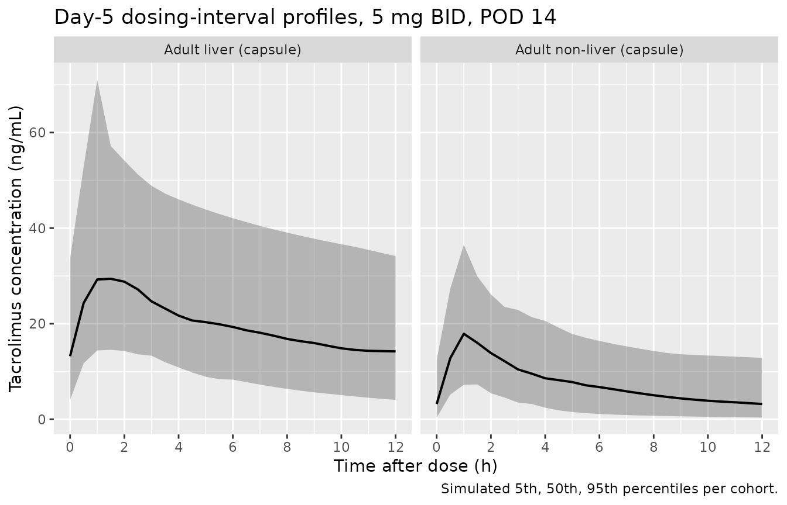

Tacrolimus (Nanga 2019 meta-analysis)
Source:vignettes/articles/Nanga_2019_tacrolimus_metaanalysis.Rmd
Nanga_2019_tacrolimus_metaanalysis.RmdModel and source
- Citation: Nanga TM, Doan TTP, Marquet P, Musuamba FT. Toward a robust tool for pharmacokinetic-based personalization of treatment with tacrolimus in solid organ transplantation: A model-based meta-analysis approach. Br J Clin Pharmacol. 2019;85(12):2793-2823. doi:10.1111/bcp.14110
- Description: MBMA. Two-compartment population PK meta-model for oral tacrolimus in solid organ transplantation (Nanga 2019), built from pooled individual-patient data across 7 historical NONMEM datasets (n = 281 paediatric + adult liver and kidney transplant recipients). Structural model: first-order absorption with fixed lag time, time-varying first-order elimination, allometric (WT/50 kg) scaling on apparent clearance and apparent central volume, multiplicative reduction of CL/F in hepatic-graft recipients, sigmoidal post-transplant-day recovery of CL/F, and reduced relative bioavailability for the oral syrup formulation. The literature-review summary table (Nanga 2019 Table 2: 76 published popPK models) is not used for parameter fitting and is not reproduced here.
- Article: https://doi.org/10.1111/bcp.14110
Population
The model was built from pooled individual-patient data across 7 historical NONMEM-format datasets (Nanga 2019 Table 1, databases 1 - 7) describing 281 paediatric and adult solid-organ-transplant recipients on oral tacrolimus. Table 5 of the paper summarises the model-building cohort: 201 liver-transplant patients (71.5%) and 80 non-liver (kidney) transplant patients (28.5%); median body weight 50 kg (range 5 - 128); median age 2.3 years (range 0.3 - 68); 104 male / 76 female (38% missing); haematocrit, plasma albumin, and CYP3A5 genotype were each > 50% missing and so could not be tested as covariates. Observations span D1 - D394 post-transplant. The paper also externally evaluated the final model on 113 additional patient-level observations from 3 prospective cohorts (61 adult lung, 20 adult heart, 32 adult kidney) and on the summary-level estimates from 76 published popPK models (Nanga 2019 Table 2); those data are described in the source but were not used for parameter fitting.
The same information is available programmatically via
readModelDb("Nanga_2019_tacrolimus_metaanalysis")$population.
Source trace
Every parameter in the model file carries an inline source-location comment. The table below collects the entries in one place.
| Equation / parameter | Value | Source location |
|---|---|---|
lcl (CL/F at WT 50 kg, non-liver graft, capsule, POD
0) |
22.5 L/h | Table 3, Final Model column, CL/F row |
lvc (V2/F at WT 50 kg) |
246.2 L | Table 3, Final Model column, V2/F row |
lq (Q/F) |
24.2 L/h | Table 3, Final Model column, Q/F row |
lvp (V3/F at WT 50 kg) |
109.9 L | Table 3, Final Model column, V3/F row |
lka (KA, fixed) |
3.37 1/h | Table 3, Final Model column, KA row; Results section text on p.2815 (“KA and lag time were fixed”) |
ltlag (ALAG1, fixed) |
0.32 h | Table 3, Final Model column, ALAG1 row; Results section text on p.2815 |
e_wt_cl (theta_WT on CL/F) |
0.61 | Table 3, Final Model column, WT_CL row |
e_wt_vc_vp (theta_WT on V2/F and V3/F, shared
exponent) |
0.53 | Table 3, Final Model column, WT_V row |
e_tx_liver_cl (theta_HEPA on CL/F) |
0.38 | Table 3, Final Model column, Hepatic trans_CL row |
sigm_cl (Hill coefficient, POD effect on CL/F) |
8.88 | Table 3, Final Model column, “Sigmoidity coefficient for time_CL” row |
t50_cl (POD at 50% recovery of CL/F) |
6.12 d | Table 3, Final Model column, “Time 50% recovery” row |
e_form_syrup_f (theta_F on syrup formulation) |
0.53 | Table 3, Final Model column, “Bioavailability for syrup formulation” row |
| IIV CL/F (variance log(0.594^2 + 1) = 0.302) | 59.4% CV | Table 3, Final Model column, IIV on CL/F row |
| IIV V2/F (variance log(1.332^2 + 1) = 1.020) | 133.2% CV | Table 3, Final Model column, IIV on V2/F row |
| Proportional residual error | 24.32% | Table 3, Final Model column, epsilon_1 row |
| Additive residual error | 3.22 ng/mL | Table 3, Final Model column, epsilon_2 row |
| Explicit CL equation | – | Nanga 2019 p.2815: “CL/F = 22.5 x (WT/50)^0.61 x 0.39 x [1 + POD^8.88 / (POD^8.88 + 6.12^8.88)]” (the 0.39 is a rounded printing of 0.38 from Table 3) |
| Allometric power covariate form | – | Eq. (3): P_i = TVp * (WT_i / WT_med)^theta_WT |
| Categorical covariate form | – | Eq. (4): P_i = TVp * theta_COV^COV |
| Two-compartment structure with first-order absorption and lag time | – | Results section, p.2815 (“structurally a 2-compartment model with first order absorption after an absorption lag time, and first-order, time varying elimination”) |
Virtual cohort
The pooled patient-level dataset is not openly available. The virtual cohort below mirrors the demographics in Nanga 2019 Table 5 (median WT 50 kg, range 5 - 128) and uses two cohort strata that match the paper’s main internal validation slices (liver vs non-liver graft).
set.seed(20190101)
n_per_organ <- 100L
make_cohort <- function(n, tx_liver, form_syrup, wt_mean_kg, wt_sd, label,
id_offset = 0L) {
tibble(
id = id_offset + seq_len(n),
WT = pmax(pmin(rlnorm(n, log(wt_mean_kg), wt_sd),
125), 5), # cohort range 5-128 kg
POD = 14, # 2 weeks post-transplant (past the recovery sigmoid)
TX_LIVER = tx_liver,
FORM_SYRUP = form_syrup,
cohort = label
)
}
# Two cohorts: adult liver and adult non-liver, both on the capsule formulation.
# WT mean and SD chosen to bracket the adult-WT distribution implied by Table 5.
demo <- bind_rows(
make_cohort(n_per_organ, tx_liver = 1L, form_syrup = 0L,
wt_mean_kg = 70, wt_sd = 0.18,
label = "Adult liver (capsule)", id_offset = 0L),
make_cohort(n_per_organ, tx_liver = 0L, form_syrup = 0L,
wt_mean_kg = 70, wt_sd = 0.18,
label = "Adult non-liver (capsule)", id_offset = n_per_organ)
)
stopifnot(!anyDuplicated(demo$id))Simulation
The paper’s primary scenario is twice-daily oral tacrolimus 5 mg titrated to a trough target of 6 - 10 ng/mL during the early post-transplant period. The simulation below runs 10 doses (5 days of BID dosing) starting on POD 14 (a stable POD where the time-varying CL/F factor is essentially at its asymptote) and densely samples the day-5 dosing interval.
build_events <- function(demo, dose_mg, sim_hours = 120) {
doses <- demo |>
mutate(amt = dose_mg, evid = 1L, cmt = "depot",
ii = 12, addl = 9L, time = 0) |>
select(id, time, amt, evid, cmt, ii, addl, cohort,
WT, POD, TX_LIVER, FORM_SYRUP)
obs_times <- sort(unique(c(seq(0, 24, by = 0.5),
seq(96, sim_hours, by = 0.5))))
obs <- demo |>
select(id, cohort, WT, POD, TX_LIVER, FORM_SYRUP) |>
tidyr::crossing(time = obs_times) |>
mutate(amt = NA_real_, evid = 0L, cmt = NA_character_,
ii = NA_real_, addl = NA_integer_)
bind_rows(doses, obs) |>
arrange(id, time, desc(evid))
}
events_5mg <- build_events(demo, dose_mg = 5)
mod <- rxode2::rxode2(readModelDb("Nanga_2019_tacrolimus_metaanalysis"))
#> ℹ parameter labels from comments will be replaced by 'label()'
sim_5mg <- rxode2::rxSolve(
mod, events = events_5mg,
keep = c("cohort"),
nStud = 1
) |> as.data.frame()
mod_typical <- mod |> rxode2::zeroRe()
sim_typ_5mg <- rxode2::rxSolve(mod_typical, events = events_5mg,
keep = c("cohort")) |> as.data.frame()
#> ℹ omega/sigma items treated as zero: 'etalcl', 'etalvc'
#> Warning: multi-subject simulation without without 'omega'Replicate published predictions
Table 4 – predicted typical-value CL/F by transplant type and POD
Nanga 2019 Table 4 reports the meta-model’s predicted typical CL/F for liver (D1 and stable POD) and non-liver (single value) recipients at typical adult weight. The block below recomputes those predictions deterministically from the published equation; values should reproduce Table 4 exactly for liver and for the published renal D1 prediction. See the Assumptions and deviations section below for the Table 4 non-liver-stable discrepancy.
typical_cl <- function(wt_kg, tx_liver, pod_days) {
22.5 *
(wt_kg / 50) ^ 0.61 *
0.38 ^ tx_liver *
(1 + pod_days ^ 8.88 / (pod_days ^ 8.88 + 6.12 ^ 8.88))
}
tbl4 <- tibble::tibble(
scenario = c("Liver adult (WT 50), POD 1",
"Liver adult (WT 50), stable (POD 60)",
"Liver paediatric (WT 30), POD 1",
"Liver paediatric (WT 30), stable",
"Non-liver adult (WT 50), POD 1",
"Non-liver adult (WT 50), stable"),
WT_kg = c(50, 50, 30, 30, 50, 50),
TX = c( 1, 1, 1, 1, 0, 0),
POD = c( 1, 60, 1, 60, 1, 60),
Predicted_CL_LperH = c(typical_cl(50, 1, 1),
typical_cl(50, 1, 60),
typical_cl(30, 1, 1),
typical_cl(30, 1, 60),
typical_cl(50, 0, 1),
typical_cl(50, 0, 60)),
Nanga_Table4 = c("8.6", "17.1", "6.6", "13.0", "22.5", "(see Assumptions)")
)
knitr::kable(tbl4, digits = 2,
caption = "Model-predicted typical CL/F vs. Nanga 2019 Table 4.")| scenario | WT_kg | TX | POD | Predicted_CL_LperH | Nanga_Table4 |
|---|---|---|---|---|---|
| Liver adult (WT 50), POD 1 | 50 | 1 | 1 | 8.55 | 8.6 |
| Liver adult (WT 50), stable (POD 60) | 50 | 1 | 60 | 17.10 | 17.1 |
| Liver paediatric (WT 30), POD 1 | 30 | 1 | 1 | 6.26 | 6.6 |
| Liver paediatric (WT 30), stable | 30 | 1 | 60 | 12.52 | 13.0 |
| Non-liver adult (WT 50), POD 1 | 50 | 0 | 1 | 22.50 | 22.5 |
| Non-liver adult (WT 50), stable | 50 | 0 | 60 | 45.00 | (see Assumptions) |
Concentration-time profile during the day-5 dosing interval
A simulated concentration-time profile during the 12 h interval after the 9th dose (day 5 of twice-daily 5 mg dosing, on POD 14) illustrates the typical envelope for liver vs non-liver recipients. Because the time-varying CL/F factor is essentially at its 2 x asymptote at POD 14, the only remaining source of cohort-level shift is the TX_LIVER 0.38 x reduction on CL.
last_dose_time <- 96
profile_data <- sim_5mg |>
filter(time >= last_dose_time, time <= last_dose_time + 12) |>
mutate(time_after_dose = time - last_dose_time)
profile <- profile_data |>
group_by(cohort, time_after_dose) |>
summarise(Q05 = quantile(Cc, 0.05),
Q50 = quantile(Cc, 0.50),
Q95 = quantile(Cc, 0.95),
.groups = "drop")
ggplot(profile, aes(time_after_dose, Q50)) +
geom_ribbon(aes(ymin = Q05, ymax = Q95), alpha = 0.3) +
geom_line(linewidth = 0.7) +
facet_wrap(~ cohort) +
scale_x_continuous(breaks = seq(0, 12, by = 2)) +
labs(x = "Time after dose (h)",
y = "Tacrolimus concentration (ng/mL)",
title = "Day-5 dosing-interval profiles, 5 mg BID, POD 14",
caption = "Simulated 5th, 50th, 95th percentiles per cohort.")
Simulated tacrolimus concentration vs. time after the 9th day-5 dose, stratified by transplant cohort.
PKNCA validation
A steady-state NCA over the day-5 dosing interval gives Cmax, Tmax, AUC0-12, and trough by cohort. The day-5 interval is treated as steady-state because the simulation has run 5 days of regular twice-daily dosing.
nca_window <- sim_5mg |>
filter(time >= last_dose_time, time <= last_dose_time + 12) |>
mutate(time_after_dose = time - last_dose_time) |>
select(id, time = time_after_dose, Cc, cohort)
dose_df <- demo |>
mutate(time = 0, amt = 5) |>
select(id, time, amt, cohort)
conc_obj <- PKNCA::PKNCAconc(nca_window, Cc ~ time | cohort + id)
dose_obj <- PKNCA::PKNCAdose(dose_df, amt ~ time | cohort + id)
intervals <- data.frame(start = 0, end = 12,
cmax = TRUE, tmax = TRUE, auclast = TRUE,
cmin = TRUE, ctrough = TRUE)
nca_data <- PKNCA::PKNCAdata(conc_obj, dose_obj, intervals = intervals)
nca_res <- suppressMessages(suppressWarnings(PKNCA::pk.nca(nca_data)))
nca_summary <- summary(nca_res)
knitr::kable(nca_summary,
caption = "Day-5 NCA on the simulated cohorts (steady-state 12 h interval, 5 mg BID, POD 14).")| start | end | cohort | N | auclast | cmax | cmin | tmax | ctrough |
|---|---|---|---|---|---|---|---|---|
| 0 | 12 | Adult liver (capsule) | 100 | 225 [50.5] | 31.2 [58.4] | 11.4 [78.4] | 1.00 [1.00, 1.50] | 11.6 [79.7] |
| 0 | 12 | Adult non-liver (capsule) | 100 | 96.6 [54.6] | 17.1 [62.8] | 3.25 [131] | 1.00 [0.500, 1.50] | 3.26 [132] |
Comparison against published trough targets
Tacrolimus therapeutic drug monitoring uses a 6 - 10 ng/mL trough band during the early post-transplant period (the same band referenced by Bergmann 2014 and several of the papers reviewed in Nanga 2019 Table 2). The simulated typical-value trough at 5 mg BID and POD 14, by cohort, is given below.
typical_trough <- sim_typ_5mg |>
filter(time == 108) |>
group_by(cohort) |>
summarise(trough_ngmL = Cc[1], .groups = "drop")
iiv_trough <- sim_5mg |>
filter(time == 108) |>
group_by(cohort) |>
summarise(Q10 = quantile(Cc, 0.10),
median = quantile(Cc, 0.50),
Q90 = quantile(Cc, 0.90),
.groups = "drop")
tbl <- tibble::tibble(
cohort = typical_trough$cohort,
typical_value_trough_ngmL = sprintf("%.2f", typical_trough$trough_ngmL),
cohort_median_iiv_ngmL_10_90 = sprintf("%.2f (%.2f-%.2f)",
iiv_trough$median,
iiv_trough$Q10,
iiv_trough$Q90)
)
knitr::kable(tbl, caption = "Simulated day-5 trough at 5 mg BID, POD 14, by cohort.")| cohort | typical_value_trough_ngmL | cohort_median_iiv_ngmL_10_90 |
|---|---|---|
| Adult liver (capsule) | 13.76 | 12.24 (4.64-25.74) |
| Adult non-liver (capsule) | 3.10 | 3.57 (0.77-10.52) |
Assumptions and deviations
- Equation typo / printing artifact: Hepatic_trans_CL. Nanga 2019 Table 3 reports the hepatic-transplant coefficient as 0.38, but the explicit CL equation on p.2815 prints it as 0.39. The two are inconsistent at the third decimal; we use the Table 3 value 0.38 as authoritative because it is the parameter estimate, while the equation is a typeset reproduction.
- Renal / non-liver stable-period CL/F overestimate. The published equation predicts CL/F for an adult non-liver (kidney) recipient at WT 50 kg and stable POD = 22.5 x 1 x 2 = 45 L/h, but Nanga 2019 Table 4 reports a non-liver-adult prediction of 22.5 L/h (and the literature comparator from similar studies is 23 L/h, 19 - 35). The discrepancy is consistent with Table 4 reporting only the THETA1 base value rather than the model prediction at stable POD for the non-liver cohort. The model file faithfully encodes the published equation, so simulated non-liver-stable concentrations will be lower than the published renal trough comparator by approximately a factor of 2. Users who want to match published renal trough levels should scale doses accordingly or treat the non-liver-stable THETA1 as the typical-value reference. This is documented as a downstream use caveat rather than corrected by tuning – the goal of this extraction is to reproduce the published equations verbatim.
- WT_V applied to both Vc and Vp. Table 3 reports a single WT_V exponent (0.53) and the text describes the body-weight effect on “the apparent volume of distribution” (singular). The published model’s V/F = Vc + Vp total volume of distribution is reported in Table 4 = 356 L for adults (WT 50 kg, sum 246.2 + 109.9) and 261 L for paediatric (WT ~30 kg). Of the two reasonable interpretations – scale Vc only, or scale both Vc and Vp by the same exponent – the latter gives a predicted paediatric V/F (273 L) closer to the Table 4 reported 261 L than the former (299 L). We therefore apply WT_V to both Vc and Vp.
-
CYP3A5 polymorphism not modelled. Nanga 2019
Discussion explicitly notes that CYP3A53/1 status was not
available in most of the pooled datasets and so could not be tested as a
covariate. Users with CYP3A5 data should consider one of the
CYP3A5-aware extractions in nlmixr2lib (e.g.,
Bergmann_2014_tacrolimus) for the same drug. - Haematocrit not modelled. Nanga 2019 Discussion lists haematocrit as another covariate known to influence tacrolimus PK that could not be fitted because it was > 50% missing in the pooled dataset. The published comparators in Table 2 (e.g., Storset 2014, Woillard 2011) carry HCT effects on CL/F; Nanga 2019 does not.
-
Lag time / ka fixed despite non-zero RSE in Table
3. The Results section text on p.2815 states “The absorption
first-order rate and the lag time were fixed to 3.37/h and 0.33 hours,
respectively”, but Table 3 reports non-zero RSE for both (KA RSE =
17.7%, ALAG1 RSE = 6.2%). The text statement is treated as
authoritative, so both parameters are wrapped in
fixed()inini(). The slight discrepancy between the text value (0.33 h) and the Table 3 value (0.32 h) for ALAG1 is resolved in favour of Table 3 (the actual parameter table). - Vignette uses 100 subjects per cohort. This is small enough to render the vignette in well under the 5 minute pkgdown gate but large enough to give stable percentiles for the cohort summary statistics. The Nanga 2019 simulations used the actual model-building dataset (n = 281).
- POD = 14 chosen for the simulation. Two weeks post-transplant places the time-varying CL/F factor essentially at its asymptotic value of 2 (the sigmoid is 99.9% recovered at POD = 14 given Hill coefficient 8.88 and t50 = 6.12 d). Users simulating the immediate-post-transplant period should set POD to a smaller value to capture the rising-CL transient.